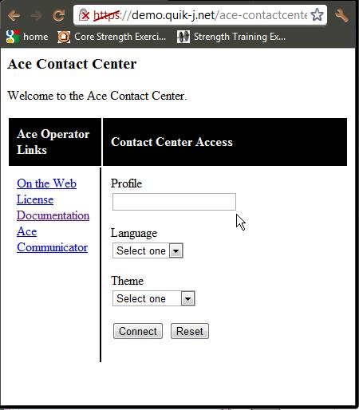
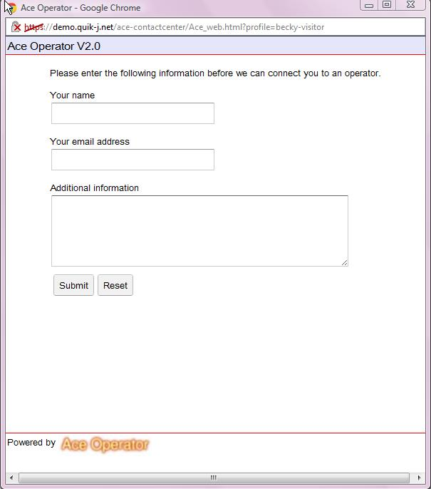
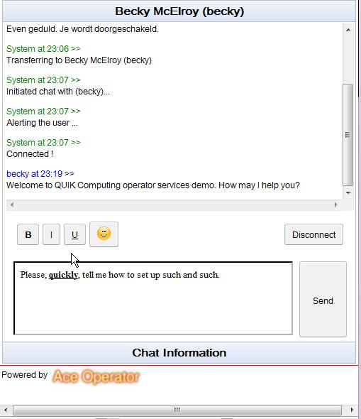
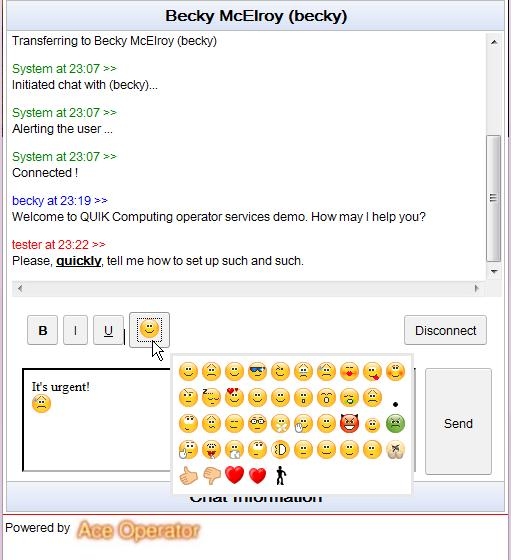

This document provides a description of visitor access using the new version of Ace Operator. For information on operator access, see the Ace Operator Version 2 Operator User Guide document.
To access the demo, use your web browser to navigate to this URL:
http://demo.quik-j.net/ace-contactcenter
If you get a warning saying that this site's security certificate or connection is not trusted, click to proceed and accept the certificate if prompted. You should arrive at the demo home page.
The demo home page looks like this:

In the “Profile” box (see pointer above), enter your visitor profile. If you don't know your visitor profile, please contact QUIK Computing (support@quik-j.com).
Next, click on the “Connect” button. You should get a new window with the user information form for the user to fill in. This new window will serve your entire visitor session – so it is the only window that you need to keep open while using Ace Operator.

Fill in the form and click “Submit”. The chat will be routed to an operator and the user information form will be replaced with the Chat screen, below. When the operator answers, a “Connected!” message will be received and then you can communicate with the operator.
The
Chat screen shows the name of the operator you're chatting with
followed by the messages that have been exchanged as well as
informational messages. Below that is the area you use to send
messages to the operator:
You can type a message in the typing area, and use the Bold, Italic and Underline icons to apply style to the typed text:

Hit return or the “Send” button to send the message.
You can include emoticons in messages by clicking on the emoticon icon and selecting from the popup pallette:

Hit return or the “Send” button to send messages with emoticons.
Users can copy text from anywhere and paste it into the typing window – this example shows copying from the previously exchanged messages:
The Disconnect button will disconnect the chat. The window is not automatically closed so that the user can look back at the message. The user can close the window at any time.